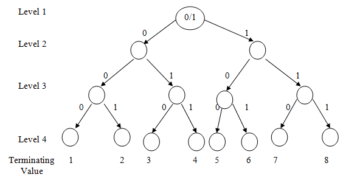
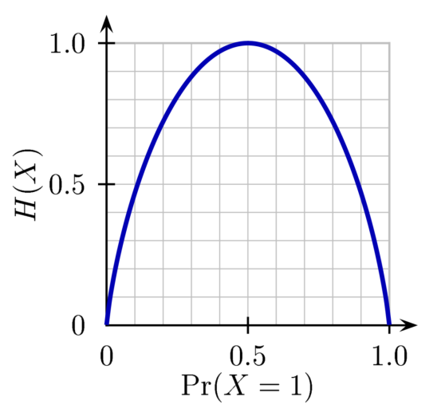

name:opening **Information Theory Primer**<br> Ronak Mehta <br> NeuroData Lunch Meeting: 2/19/2020 (Last Revised 3/10/2020)<br> <!-- {[BME](https://www.bme.jhu.edu/),[ICM](https://icm.jhu.edu/),[CIS](http://cis.jhu.edu/),[KNDI](http://kavlijhu.org/)}@[JHU](https://www.jhu.edu/) --> <a href="https://neurodata.io"></a> <!-- --> <!-- --> <!-- <font color="grey"></font> --> .foot[Slides Format: Joshua T. Vogelstein | <http://neurodata.io/talks>] --- ### Purpose of this Talk 1. Definitions of core information-theoretic quantities. 2. Interpretations in communication. 3. Applications to statistics and machine learning. --- class: middle, inverse ## .center[Motivation] --- ## Information $A$ is a random event. Can we measure the amount of information gained from knowledge of $A$? -- **Criterion 1:** More surprising or rare events contribute more information. -- **Criterion 2:** Information from independent events is additive. -- **Criterion 3:** Information varies continuously (in some sense) as the event changes. --- ## Information Let $-\log p(A)$ be the information given by $A$. -- **Criterion 1:** $p(A)$ is low $\rightarrow$ $-\log p(A)$ is high. -- **Criterion 2:** $A, B$ independent $\rightarrow$ $$- \log p(A, B) = -\log (p(A) \cdot p(B))$$ $$= (-\log p(A)) + (-\log p(B))$$ -- **Criterion 3:** $\log(\cdot)$ is a continuous function in the probability. --- class: middle, inverse ## .center[Building Blocks] --- ## The Horse Race Say there is a race with four horses, $A$, $B$, $C$, and $D$. -- I want to tell Hayden, who lives in across the world, who won the race. I can only communicate in a **binary encoding**. --- ## The Horse Race: Encodings An **encoding** is a sequence of bits (0 or 1) that identifies symbols of an alphabet. You must know by the value of the bit string whether the symbol is complete. -- For example $A = 0, B = 1, C = 10, D = 11$ is **NOT** a valid encoding, as after receiving $1$, Hayden is unsure whether the sender means $B$, or will continue on to complete symbols $C$ or $D$. --- ## The Horse Race: Encodings An encoding is valid if and only if it is representable by a decision tree, in which the symbols are leaf nodes. .center[] --- ## The Horse Race: Encodings Consider the encoding: $A = 1110, B = 110, C = 10, D = 0$. -- The probabilities of victory are $A: 100\%, B: 0\%, C: 0\%, D: 0\%$. What is the average number of bits needed to communicate the winner? -- **Answer:** $1 \cdot 4 + 0 \cdot 3 + 0 \cdot 2 + 0 \cdot 1 = 4$. -- What if the probabilities are $A: 50\%, B: 50\%, C: 0\%, D: 0\%$? -- **Answer:** $0.5 \cdot 4 + 0.5 \cdot 3 + 0 \cdot 2 + 0 \cdot 1 = 3.5$. -- What if the probabilities are $A: 25\%, B: 25\%, C: 25\%, D: 25\%$? -- **Answer:** $0.25 \cdot 4 + 0.25 \cdot 3 + 0.25 \cdot 2 + 0.25 \cdot 1 = 2.5$. --- ## The Optimal Encoding Because sending and storing data is expensive, we wish to send the minimal amount of bits. What is the optimal encoding, in the send of minimizing the average number of bits sent? Letting $A = 00, B = 01, C = 10, D = 11$, we achieve the best average, which is of 2. Note that this is not unique. -- Intuitively, an optimal encoding should assign short bit strings to high probability symbols. (See Cover & Thomas Example 1.1.2 for a variable-length example.) -- The winner of the race can be an analogy for any random variable $Y$. How many bits on average do we need to communicate the value of $Y$? --- ## Entropy Random variable $Y: \Omega \rightarrow \mathcal{Y}$. -- $p(y) = Pr(Y = y)$. -- The **entropy** $H(Y)$ (in bits) is the average information (or average surprise) from an observation of $Y$. -- $$H(Y) = \mathbb{E}\_Y[-\log\_2 p(Y)] = -\sum\_{y \in \mathcal{Y}} p(y) \log\_2 p(y)$$ --- ## Entropy Entropy thus measures **uncertainty** in a distribution. The more uncertainty, the more surprise in each outcome. -- .center[] For a coin flip, the entropy is maximized at $p = \frac{1}{2}$. For a $K$ class multinomial, it is maximized at $p_k = \frac{1}{K}$ for all $k \in [K]$. --- ## Entropy Let $b: \mathcal{Y} \rightarrow \mathcal{B}$ be an encoder, i.e. writes an observation of $Y$ as a bit string. Then, $$ \mathbb{E}\_{Y}[b(Y)] \geq H(Y) $$. Thus, the entropy gives a **lower bound** on the number of bits sent on average by the optimal encoder. The entropy can be achieved if all of the probabilities are (negative) powers of two. -- This is the same as the average depth of the decision tree required to figure out Y. --- ## Cross Entropy What if $Y \sim p$, but I think that $Y \sim q$. My coding scheme will require however many bits it does on average to communicate $Y$. $$H(p, q) = \ \mathbb{E}\_{Y \sim p}[-\log \color{red}{q} (Y)]$$ $$ = -\sum\_{y \in \mathcal{Y}}p(y)\log \color{red}{q}(y)$$ -- This is called the **cross entropy** of $p$ and/to $q$. Letting $H(p) = H(Y)$ if $Y \sim p$, $$H(p, q) \geq H(p)$$ --- ## Conditional Entropy What if there is some auxilary random variable $X: \Omega \rightarrow \mathcal{X}$, such as the number of fans at the race? -- Let $H(Y \color{red}{\mid X = x}) = -\sum\_{y \in \mathcal{Y}} p(y \color{red}{\mid x}) \log p(y \color{red}{\mid x})$. Note that this is a function of $x$. --- ## Conditional Entropy **Conditional entropy** measures the average number of bits needed to communicate $Y$ when $X$ is known, averaged over $X$. $$H(Y \mid X) =\ \mathbb{E}\_{X'} [H(Y \mid X = X')] $$ -- $$ =\ \mathbb{E}\_X \mathbb{E}\_{Y \mid X}[-\log p(Y \mid X)] $$ -- $$ = -\sum\_{x \in \mathcal{X}} p(x) \sum\_{y \in \mathcal{Y}} p(y \mid x) \log p(y \mid x)$$ -- $$ = -\sum\_{x, y} p(y, x) \log p(y \mid x)$$ <!-- = -\sum\_{x \in \mathcal{X}} p(x) \sum\_{y \in \mathcal{Y}} p(y \mid x) \log p(y \mid x) --> --- ## Conditioning Helps $H(Y \mid X) \leq H(Y)$ -- This does not mean that $H(Y \mid X = x) \leq H(Y)$ for all $x \in \mathcal{X}$. It helps **on average**. --- ## Chain Rule Joint probability is multiplicative: $p(X, Y) = p(X)\cdot p(Y \mid X)$ -- Joint entropy is additive: $H(X, Y) = H(X) + H(Y \mid X)$ -- For $n$ random variables: $$H(Y\_1, ..., Y\_n) = H(Y\_1) + H(Y\_2 \mid Y\_1) + ... + H(Y\_n \mid Y\_1, ..., Y\_{n-1})$$ $$ = \sum\_{i=1}^n H(Y\_i \mid Y\_1, ..., Y\_{i-1})$$ --- class: middle, inverse ## .center[Consequences] --- ## KL-Divergence The **Kullback-Liebler divergence** (also called **relative entropy**) of $q$ from $p$ ($p$ to $q$) is: $$D(p \mid\mid q) = H(p, q) - H(p)$$ -- $$ = \ \mathbb{E}\_{Y \sim p}[(-\log q(Y)) - (- \log p(Y))]$$ -- $$ = -\sum\_{y \in \mathcal{Y}} p(y) \log \frac{q(y)}{p(y)}$$ $$ = \sum\_{y \in \mathcal{Y}} p(y) \log \frac{p(y)}{q(y)}$$ -- Note that KL is **not symmetric**. --- ## Maximum-Likelihood If $Y\_1, ..., Y\_n \sim p\_{\theta}$ i.i.d., and $\hat{p}\_n$ is the empircal distribution, then the MLE for $\theta$ solves: $$\text{arg} \max\_{\theta} \prod\_{i=1}^n p\_{\theta}(Y_i)$$ -- $$\text{arg} \max\_{\theta} \sum\_{i=1}^n \color{red}{\frac{1}{n}} \color{red}{\log} p\_{\theta}(Y_i)$$ -- $$\text{arg} \min\_{\theta} -\mathbb{E}\_{Y \sim \hat{p}\_n} [\log p\_{\theta}(Y)]$$ -- $$\text{arg} \min\_{\theta} H(\hat{p}\_n, p\_{\theta})$$ -- $$\text{arg} \min\_{\theta} H(\hat{p}\_n, p\_{\theta}) \color{red}{- H(\hat{p}\_n)}$$ -- $$\text{arg} \min\_{\theta} D(\hat{p}\_n \mid \mid p\_{\theta})$$ --- ## Arbitrary Loss Functions In supervised learning, we pick the function $h\_{\theta}$ that minimizes empirical risk: $\frac{1}{n} \sum\_{i=1}^n l(h\_\theta(X_i), Y_i)$. -- $$l(y, y') = (y - y')^2 \rightarrow Y \mid X \sim \mathcal{N}(h\_\theta(X), \sigma^2)$$ -- $$l(y, y') = |y - y'| \rightarrow Y \mid X \sim \text{Laplace}(h\_\theta(X), b)$$ -- $$l(y, y') = \mathbb{I}(y \neq y') \rightarrow Y \mid X \sim \text{Bern}(h\_\theta(X))$$ -- In these cases, supervised learning **is** maximimum-likelihood estimation **is** minimizing $ D(\hat{p}\_n \mid \mid p\_{\theta})$. --- ## Nonsymmetry What is the difference between $D(p \mid\mid q)$ and $D(q \mid\mid p)$? Consider a bimodal $p$, and minimizing either quantity over $q$. .center[<img src="images/kl.png" style="width:650px;"/>] --- ## Nonsymmetry $ \min\_{\theta} D(\hat{p}\_n \mid \mid p\_{\theta}) \rightarrow$ (possibly) bad extrapolation. $ \min\_{\theta} D(p\_{\theta} \mid \mid \hat{p}\_n) \rightarrow$ (possibly) bad intrapolation. --- ## Mutual Information The **mutual information** between $X$ and $Y$ is defined as: $$I(X; Y) = H(Y) - H(Y \mid X)$$ -- $$ = H(X) - H(X \mid Y)$$ -- $$ = D(p\_{XY} \mid \mid p\_X \cdot p\_Y)$$ -- $$ = \mathbb{E}\_{X'}[D(p\_{Y \mid X = X'} \mid \mid p\_Y)]$$ --- ## Chain Rule Consider the mutual information between $Y$ and the random pair variable $(X, Z)$. $$I(Y; X, Z) = I(Y; Z) + I(Y; X \mid Z)$$ .center[where] $$I(Y; X \mid Z) = H(Y \mid Z) - H(H \mid X, Z)$$ -- $I(Y; X \mid Z)$ (conditional mutual information), is the additional information about $Y$ that is captured by $X$ and not by $Z$. --- ## Classification Say $g: \mathcal{X} \rightarrow \mathcal{Y}$, and $L^* = \min\_{g} Pr(g(X) \neq Y)$. Then: -- $$L^* \leq 1 - \frac{1}{2^{H(Y \mid X)}}$$ $$= 1 - \frac{1}{2^{H(Y) - I(Y; X)}}$$ --- ## Data Processing Inequality If $T: \mathcal{X} \rightarrow \mathcal{X'}$ is **any transformation** of the data, then: $$I(Y; X) \geq I(Y; T(X))$$ -- If $T(X)$ is a sufficient statistic, then: $$I(Y; X) = I(Y; T(X))$$ This has applications to data compression for downstream classification. -- What is $T$ sufficient for, in the statistical sense? Letting $Z = (X, Y)$, consider the infinite-dimensional parameter $\theta(F\_Z) = F\_{Y \mid Z}$. $T(Z) = T(X)$ (ignoring $Y$) is sufficient for $\theta$. --- ## Hypothesis Testing Consider the two-sample test: $$H_0: p = p\_0$$ $$H_0: p = p\_1$$ Let $\beta\_n$ be the probability of Type II error, constrained by level $\alpha$. Then, -- $$\beta\_n > (1 - 2 \alpha) 2^{-n (D(p\_0 \mid\mid p\_1) + \alpha)}$$ --- class: middle, inverse ## .center[Relevance] --- ## Hypothesis Testing Estimate mutual information with Uncertainty Forest$^{\text{TM}}$, and estimate null distribution with permutation test. -- Exact equivalence gives us a two-sample test as well. **Question:** How do we interpret the test statistic for the two-sample test? Is it related to KL? --- ## Feature Importance Can information-theoretic quantities, such as $I(Y; X\_j)$ or $I(Y; X\_j \mid X\_{-j})$ tell us the importance of feature $X\_j$? (Mike's talk) --- ## Reading Cover & Thomas (2006): - Chapter 1 - Chapter 2 - Chapter 8 - Chapter 11 - Chapter 17 --- class: middle, inverse ## .center[Questions?] --- class: middle, inverse ## .center[That's a wrap!]